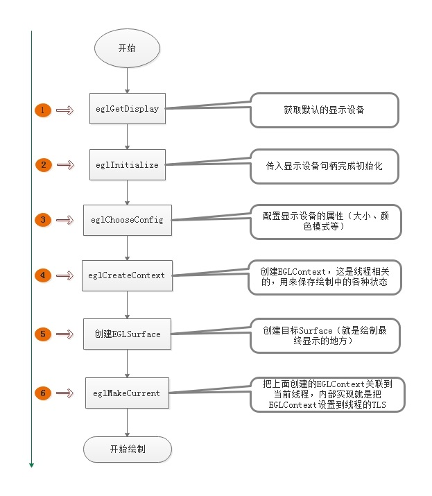
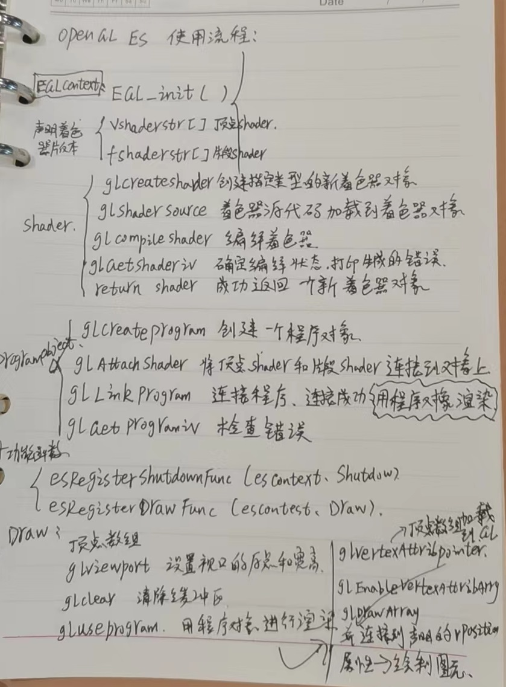

一、OpenGL ES 3.x概述 OpenGL ES 是基于 OpenGL 三维图形 API 的子集，主要是针对手机以及 PDA（掌上电脑）等嵌入式设备设计的。 OpenGL ES 的 API 由 Khronos 组织定义并推广， Khronos 是一个图形软硬件行业协会，该协会致力于为这些 API 建立免费的开发标准。
1、 OpenGL ES3.x简介 OpenGL 的应用领域较为广泛，适用于 UNIX、 Mac OS、 Linux 以及 Windows 等几乎所有的操作系统，可以开发游戏、工业建模以及嵌入式设备应用。
OpenGL ES 是专门针对嵌入式设备而设计的，其实际是 OpenGL 的剪裁版本，去除了OpenGL 中许多不是必须存在的特性，如 GL_QUADS（四边形）与 GL_POLYGONS（多边形）绘制模式以及 glBegin（开始） /glEnd（结束）操作等。
2.OpenGL与OpenGL-ES的主要区别： 之所以会推出OpenGL-ES版本，主要是应对嵌入式环境和应用的要求。
早先定义OpenGL ES是OpenGL的嵌入式设备版本，但由于嵌入式设备要求的是高性能，所以一些其它纯追求高性能的设备也开始用这种API方式，比如 SONY PlayStation 3。
OpenGL ES相对OpenGL删减了一切低效能的操作方式，有高性能的决不留低效能的，即只求效能不求兼容性。
嵌入式设备一般工作于较恶劣的环境，包括：温度、湿度、振动、冲击、酸碱腐蚀等。例如：中国的酸雨气候就给很多室外电子设备带来了新的难题，中东地区的风沙也使得美军必须采用更先进的非IT技术来保护他们的电子设备。
需要人机界面的嵌入式应用，由于受环境受环境因素的影响，一般不能提供有缘电源，在有限的电能限制下工作，如何以更低的功耗完成人机交互界面，成为OpenGL必须要面对的问题，进而推出了OpenGL-ES标准。应该说在高效完成2D/3D界面的同时，达到了降低功耗的效果。
3.OpenGL ES 1.0、2.0、3.0的区别 OpenGL ES1.0： 针对固定管线硬件(fixed pipeline)，通过它内建的functions来设置诸如灯光、vertexes（图形的顶点数）、颜色、camera等等的东西。
OpenGL ES2.0： 针对可编程管线硬件(programmable pipeline)，需要自己动手编写任何功能。与此同时，2.0相比于1.0更具灵活性，功能也更强大。可以自定义顶点和像素计算，可以让表现方式更加准确。
OpenGL ES3.0： OpenGL ES3.0扩展了OpenGL ES2.0，支持许多新的渲染技术、优化和显示质量改进，包括——引入了许多和纹理相关的新功能，对着色语言进行了重大更新和支持着色器新功能的API特性，引入了多种与几何形状规范和图元渲染控制相关的新功能，引入了新的缓冲区对象，增添了许多与屏幕外渲染到帧缓冲区对象相关的新功能。具体功能在后边的文章详细说明。（可能:））
OpenGL ES 3.0的向后兼容新 OpenGL ES 3.0向后兼容OpenGL ES 2.0，但由于3.0/2.0不支持1.x支持的固定功能管线，3.0/2.0不能向后兼容1.x。
4.EGL/EAGL EGL API 参考页面:https://www.khronos.org/registry/EGL/sdk/docs/man/ )
4.1作用 EGL就是Embedded Graphics Library。嵌入式图形框架。 EGL是Khronos渲染API（如OpenGL ES）和原生窗口系统之间的接口（在iOS上则是EAGL）
4.2原因 OpenGL-ES 命令需要存储渲染上下文的状态和绘制表面的支持才能完成图形图像的绘制.
渲染上下文：存储相关的OpenGL-ES 状态
绘制表面：是用于绘制图元的表面，它指定渲染所需的缓冲区类型，比如颜色缓冲区，深度缓冲区和模板缓冲区，绘制表面还需要指定所需缓冲区的位深度
因为OpenGL-ES API没有提及如何常见渲染上下文，或者渲染上下文如何连接到原生窗口系统，EGL就是 khronos 提出的OpenGL-ES 和原生窗口系统之间的接口；（ 唯⼀⽀持OpenGL ES 却不⽀持EGL 的平台是iOS。Apple 提供⾃⼰的EGL API的iOS实现,称为EAGL。 ）
4.3EGL的功能如下：
查询并初始化设备显示商的可用显示设备
创建渲染表面
创建渲染上下文
4.4使用流程 任何OpenGL ES应用程序都必须在开始渲染之前使用EGL执行如下任务：

5.OpenGL ES 3.0图形管线的各个阶段
5.1顶点着色器 顶点和顶点着色器(Vertex & Vertex shader)，shader 是指运行在GPU可编程管线上的程序，也就是GPU所用的编程语言，本质是一种类C语言。
shader程序： 用来描述顶点上执⾏操作的顶点着⾊器程序源代码/可执⾏⽂件
shader 的输入属性，就是顶点数组提供的各个顶点的属性
uniform(统一变量) Vertex/Pixel shader 使用的不变的变量，如：颜色数据
采样器， 代表顶点着⾊器使⽤纹理的特殊统⼀变量类型。
如图所示，可以由很多属性输入到顶点着色器，最后顶点着色器也会输出属性数据，其中gl_Position和gl_PointSize是OpenGL的内建变量。
在图元光栅化阶段，为每个生成的片段计算 vertex shader 的输出值，并作为输入值传递给pixel shader,用于分配给每个图元顶点的Vertex shader输出每个片段值的机制被称为插值
5.2图元装配 图元(Primitive): 基本的图形对象 。如：点，线，三⻆形等。
图元装配: 将顶点数据计算成⼀个个图元.在这个阶段会执⾏裁剪、透视分割和Viewport变换操作。
对于每个单独图元及其对应的顶点， 图元装配阶段执⾏的操作包括：将顶点着⾊器的输出值执⾏裁剪、透视分割、视⼝变换后进⼊光栅化阶段
5.3光栅化 光栅化是将图元转换为一组二维片段的过程 ，此后这些片段就会交给Pixel shader 处理，这些二维片段就是屏幕上可以绘制的像素。
5.4 ⽚元着⾊器/⽚段着⾊器 片段着色器（Pixel shader/Fragment shader）为片段操作实现了通用的可编程方法，它的组成如下：
Shader 程序– 描述⽚段上执⾏操作的⽚元着⾊器程序源代码/可执⾏⽂件
输入变量–光栅化阶段用插值为每个片段生成的 Vertex shader 输出
输出变量– 统⼀变量(uniform)–顶点/⽚元着⾊器使⽤的不变数据
采样器–代表⽚元着⾊器使⽤纹理的特殊统⼀变量类型
5.5逐片段操作
像素归属测试: 确定帧缓存区中位置(Xw,Yw)的像素⽬前是不是归属于OpenGL ES所有. 例如,如果⼀个显示OpenGL ES帧缓存区View被另外⼀个View 所遮蔽.则窗⼝系统可以确定被遮蔽的像素不属于OpenGL ES 上下⽂.从⽽不全显示这些像素. ⽽像素归属测试是OpenGL ES 的⼀部分,它不由开发者开⼈为控制,⽽是由OpenGL ES 内部进⾏。
裁剪测试: 裁剪测试确定(Xw,Yw)是否位于作为OpenGL ES状态的⼀部分裁剪矩形范围内.如果该⽚段位于裁剪区域之外,则被抛弃。
深度测试: 输⼊⽚段的深度值进步⽐较,确定⽚段是否拒绝测试。
混合: 混合将新⽣成的⽚段颜⾊与保存在帧缓存的位置的颜⾊值组合起来。
抖动: 抖动可⽤于最⼩化因为使⽤有限精度在帧缓存区中保存颜⾊值⽽产⽣的伪像。
二、环境搭建 三、第一个OpenGL ES 3.0程序 1 2 3 4 5 6 7 8 9 10 11 12 13 14 15 16 17 18 19 20 21 22 23 24 25 26 27 28 29 30 31 32 33 34 35 36 37 38 39 40 41 42 43 44 45 46 47 48 49 50 51 52 53 54 55 56 57 58 59 60 61 62 63 64 65 66 67 68 69 70 71 72 73 74 75 76 77 78 79 80 81 82 83 84 85 86 87 88 89 90 91 92 93 94 95 96 97 98 99 100 101 102 103 104 105 106 107 108 109 110 111 112 113 114 115 116 117 118 119 120 121 122 123 124 125 126 127 128 129 130 131 132 133 134 135 136 137 138 139 140 141 142 143 144 145 146 147 148 149 150 151 152 153 154 155 156 157 158 159 160 161 162 163 164 165 166 167 168 169 170 171 172 173 174 175 176 177 178 179 180 181 182 183 184 185 186 187 188 189 190 #include "esUtil.h" typedef struct { GLuint programObject; } UserData; GLuint LoadShader ( GLenum type, const char *shaderSrc ) { GLuint shader; GLint compiled; shader = glCreateShader ( type ); if ( shader == 0 ) { return 0 ; } glShaderSource ( shader, 1 , &shaderSrc, NULL ); glCompileShader ( shader ); glGetShaderiv ( shader, GL_COMPILE_STATUS, &compiled ); if ( !compiled ) { GLint infoLen = 0 ; glGetShaderiv ( shader, GL_INFO_LOG_LENGTH, &infoLen ); if ( infoLen > 1 ) { char *infoLog = malloc ( sizeof ( char ) * infoLen ); glGetShaderInfoLog ( shader, infoLen, NULL , infoLog ); esLogMessage ( "Error compiling shader:\n%s\n" , infoLog ); free ( infoLog ); } glDeleteShader ( shader ); return 0 ; } return shader; } int Init ( ESContext *esContext ) { UserData *userData = esContext->userData; char vShaderStr[] = "#version 300 es \n" "layout(location = 0) in vec4 vPosition; \n" "void main() \n" "{ \n" " gl_Position = vPosition; \n" "} \n" ; char fShaderStr[] = "#version 300 es \n" "precision mediump float; \n" "out vec4 fragColor; \n" "void main() \n" "{ \n" " fragColor = vec4 ( 1.0, 0.0, 0.0, 1.0 ); \n" "} \n" ; GLuint vertexShader; GLuint fragmentShader; GLuint programObject; GLint linked; vertexShader = LoadShader ( GL_VERTEX_SHADER, vShaderStr ); fragmentShader = LoadShader ( GL_FRAGMENT_SHADER, fShaderStr ); programObject = glCreateProgram ( ); if ( programObject == 0 ) { return 0 ; } glAttachShader ( programObject, vertexShader ); glAttachShader ( programObject, fragmentShader ); glLinkProgram ( programObject ); glGetProgramiv ( programObject, GL_LINK_STATUS, &linked ); if ( !linked ) { GLint infoLen = 0 ; glGetProgramiv ( programObject, GL_INFO_LOG_LENGTH, &infoLen ); if ( infoLen > 1 ) { char *infoLog = malloc ( sizeof ( char ) * infoLen ); glGetProgramInfoLog ( programObject, infoLen, NULL , infoLog ); esLogMessage ( "Error linking program:\n%s\n" , infoLog ); free ( infoLog ); } glDeleteProgram ( programObject ); return FALSE; } userData->programObject = programObject; glClearColor ( 1.0f , 1.0f , 1.0f , 0.0f ); return TRUE; } void Draw ( ESContext *esContext ) { UserData *userData = esContext->userData; GLfloat vVertices[] = { 0.0f , 0.5f , 0.3f , -0.5f , -0.5f , 0.5f , 0.5f , -0.5f , -0.4f }; glViewport ( 0 , 0 , esContext->width, esContext->height ); glClear ( GL_COLOR_BUFFER_BIT ); glUseProgram ( userData->programObject ); glVertexAttribPointer ( 0 , 3 , GL_FLOAT, GL_FALSE, 0 , vVertices ); glEnableVertexAttribArray ( 0 ); glDrawArrays ( GL_TRIANGLES, 0 , 3 ); } void Shutdown ( ESContext *esContext ) { UserData *userData = esContext->userData; glDeleteProgram ( userData->programObject ); } int esMain ( ESContext *esContext ) { esContext->userData = malloc ( sizeof ( UserData ) ); esCreateWindow ( esContext, "Hello Triangle" , 375 , 667 , ES_WINDOW_RGB ); if ( !Init ( esContext ) ) { return GL_FALSE; } esRegisterShutdownFunc ( esContext, Shutdown ); esRegisterDrawFunc ( esContext, Draw ); return GL_TRUE; }
代码分析参见： OpenGL ES 3.0 入门 - 简书 (jianshu.com)
代码流程框架1 
代码流程框架2
代码流程框架3
四、OpenGL-ES 3.0/2.0 API查询网站 OpenGL-ES 3.0 API：https://www.khronos.org/registry/OpenGL-Refpages/es3.0/
OpenGL-ES 2.0 API：https://registry.khronos.org/OpenGL-Refpages/es2.0/
五、坐标系的转换 1、OpenGL坐标系
2、纹理坐标系
2D纹理是一个图像数据的二维数组。一个纹理单独数据元素称作“纹素”(Texel)。图像中的每个纹素根据基本格式和数据类型指定。如果用2D纹理渲染时，纹理坐标用作图像中的索引。2D纹理的纹理坐标用一对2D坐标(s,t)或者(u,v)来表示，这些坐标用于查找一个纹理贴图的规范化坐标。
纹理图像的左下坐标由(0.0,0.0)决定，右上角坐标由(1.0,1.0)指定。在[0.0,1.0]之外的坐标是允许的，在区间之外的纹理读取行为由纹理包装模式决定。
3、屏幕坐标系
裁剪： 限制纹理坐标的取值范围来实现裁剪的效果
六、纹理对象的创建与加载 1.本地资源 OpenCv读取，然后绑定纹理
1 2 3 4 5 6 7 8 9 10 11 12 13 14 15 16 17 18 19 20 21 22 23 24 25 static int LoadTextures (void ) string name; cv::Mat image; GLuint LoadingTexture； name = string ("../" + "resource/Loadingpicture-" + to_string (1 ) + ".png" ; image = cv::imread (name, cv::IMREAD_UNCHANGED); if (image.data == NULL ) { PRINT ("%s::%d Load Loadingpicture.png Failed \n" , __FILE__, __LINE__); return -1 ; } glGenTextures (1 , &LoadingTexture); glBindTexture (GL_TEXTURE_2D, LoadingTexture); glTexImage2D (GL_TEXTURE_2D, 0 , GL_RGBA,image.cols, image.rows, 0 , GL_RGBA, GL_UNSIGNED_BYTE, image.data); glTexParameteri (GL_TEXTURE_2D, GL_TEXTURE_MIN_FILTER, GL_LINEAR); glTexParameteri (GL_TEXTURE_2D, GL_TEXTURE_MAG_FILTER, GL_LINEAR); glTexParameteri (GL_TEXTURE_2D, GL_TEXTURE_WRAP_S, GL_REPEAT); glTexParameteri (GL_TEXTURE_2D, GL_TEXTURE_WRAP_T, GL_REPEAT); glBindTexture (GL_TEXTURE_2D, 0 ); return 1 ; ｝
2.缓冲区资源 创建EGLImage对象，然后绑定纹理